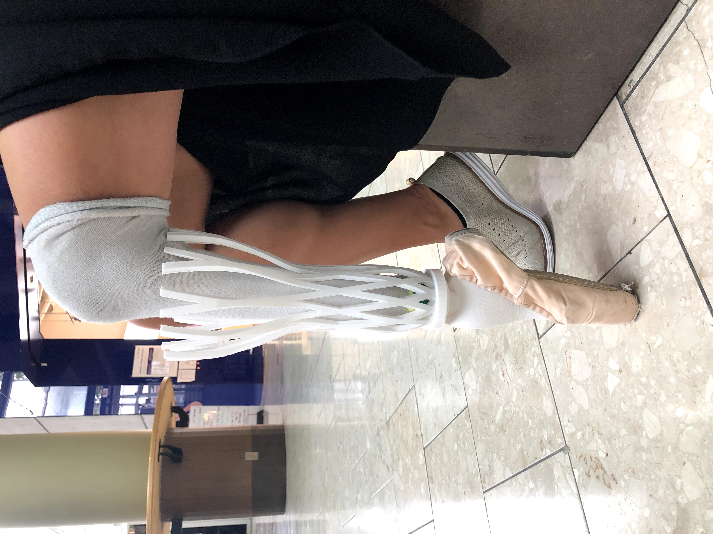
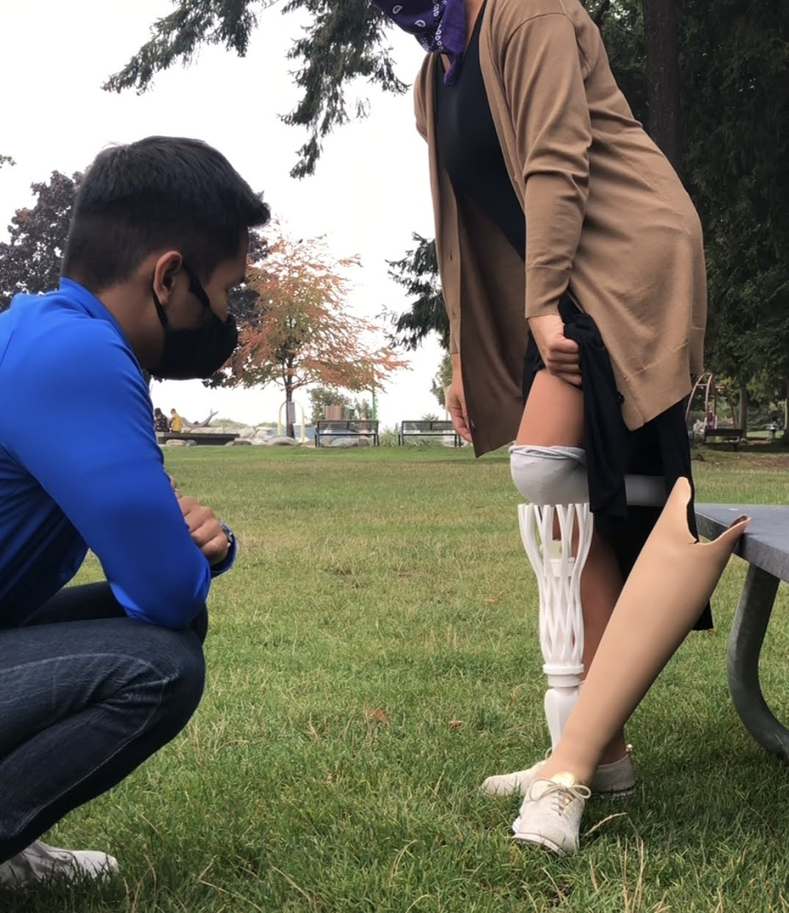

Prosthetic Pointe Shoe
Custom fixture design, SolidWorks CAD, FEA validation, and hydraulic press testing at ~2,300 lbs to enable safe en pointe standing for a below-knee amputee.
Fixture Design SolidWorks FEA Hydraulic Press Testing Prosthetics DFM
Project Gallery



Fixture Design & Hydraulic Press Testing
Why This Fixture Matters
Determining the stress-strain curve of the prosthetic pointe shoe required compressing the assembly under loads that far exceed normal body weight. Without a purpose-built fixture, the test is dangerous and unreliable:
- Safety: At ~2,300 lbs, an unsecured prosthetic can eject sideways with enough energy to cause serious injury. The fixture eliminates this by capturing the tibia section flush against the platform, preventing any lateral kick-out.
- Repeatability: A stable, self-locating fixture ensures the load is applied consistently through the same axis every test cycle, producing clean stress-strain data rather than scatter from misalignment.
- Data Integrity: By constraining unwanted degrees of freedom, the fixture isolates the material response of the prosthetic under pure compression — exactly the loading condition that matters for en pointe standing.
Fixture Design Details
The fixture was designed around the specific geometry of the prosthetic tibia and the constraints of the hydraulic press:
- Flat tibia seat: The tibia profile was designed to interface flush with the acrylic platform, maximizing the contact area and distributing reaction forces to prevent localized stress concentrations on the platform.
- Axial load alignment: The fixture geometry ensures the hydraulic ram's force vector passes through the centroid of the prosthetic, minimizing bending moments that would corrupt the stress-strain measurement.
- Material consideration: The acrylic platform was evaluated for its own compressive strength to confirm it would not fail or deform significantly before the prosthetic reached its target load.
| Parameter | Value |
|---|---|
| Max compression load | ~2,300 lbs |
| Test objective | Stress-strain curve characterization |
| Fixture constraint | Flat tibia seat — lateral ejection prevention |
| CAD software | SolidWorks |
| Validation method | Hydraulic press compression testing |
Engineering Approach
This project followed a rigorous concept-to-validation workflow:
- Requirements definition: Established the load case (~2,300 lbs axial compression) based on worst-case en pointe forces scaled with a safety factor, and identified lateral ejection as the primary failure mode to design against.
- CAD & FEA: Modeled the prosthetic and fixture in SolidWorks. Ran FEA to verify stress distribution under max load and confirm the fixture would constrain the assembly without platform failure.
- Prototyping: Fabricated the fixture and prosthetic for physical testing, iterating on fit and alignment before committing to the hydraulic press.
- Testing & data collection: Performed hydraulic press compression to generate the stress-strain curve, validating that the prosthetic can safely support en pointe loading without catastrophic failure.
- Fit & patient validation: Confirmed the prosthetic interfaces correctly with the residual limb and achieves the target range of motion for ballet performance.
Project Video
Watch the full prosthetic pointe shoe project overview: